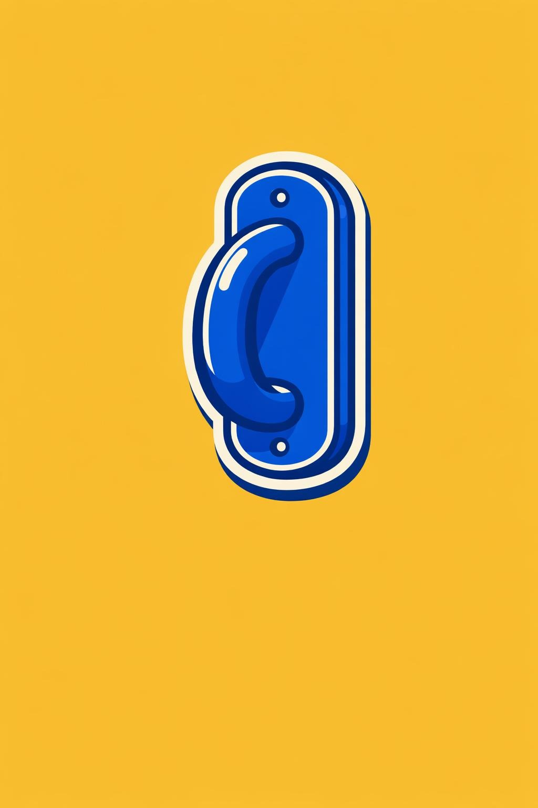

← Reading libraryIllustrated, not stripped bare.
The Mom Test and Everyday Things set the bar: a recognizable object, bold sticker outline, a little graphic depth, and breathing room. These two studies bring that character back.
Reference
Reference

Everyday Things1988
New experiment
New experiment
Yu Jun: a tactile adjustment dial replaces the scales and gem. The Crowd: an illustrated megaphone replaces the dense bubbles. The motif choices are proposals; the references above are the style target.
The new pass is closer in outline and graphic shading, though a little glossier than the references. This direction has now been applied to all 12 requested covers in the local reading library.
Yu Jun · A useful adjustment — exact prompt
Use case: stylized-concept. Design a portrait 2:3 original book-cover illustration belonging to EXACTLY the same illustrated series as the two attached references: image 1 The Mom Test (yellow microphone on teal), image 2 The Design of Everyday Things (blue door handle on yellow). These are STYLE references, not subjects to copy. Match their thick warm-white sticker contour, bold rounded drawing, a few carefully placed interior details, and 2-3 broad cel-shaded color planes giving gentle volume. One recognizable physical object, charming editorial illustration, not a minimalist logo and not photorealistic. Moderate detail like the blue door handle: broad graphic highlight and clean dark edge, no realistic surface effects. Composition: entire main sticker comfortably inside upper 62%, roughly 60% canvas width, ample side/top breathing room. Bottom 33% is empty for separately rendered HTML title. Opaque uniform solid background edge to edge. No background grain/texture/gradient, rust, realistic metal/wood/glass, intricate linework, tiny repeated dots, scene, decorative clutter, text, letters, numbers or typography. Subject for Yu Jun's Product Methodology: a single friendly chunky rotary control dial in warm yellow-orange, turned slightly away from neutral, on a compact rounded square backing plate. The central knob has one large clear notch and the backing has only three broad tick marks. Use the illustrated physicality of the reference door handle: rounded raised edge, one bold cream highlight and orange side plane, warm-white sticker border. It suggests tuning a product to people's needs without literal scales, people, diamonds, puzzle pieces or abstract blobs. Solid royal purple background. Make it feel like a beautifully drawn useful object, not a settings app icon.
The Crowd · One voice, amplified — exact prompt
Use case: stylized-concept. Design a portrait 2:3 original book-cover illustration belonging to EXACTLY the same illustrated series as the two attached references: image 1 The Mom Test (yellow microphone on teal), image 2 The Design of Everyday Things (blue door handle on yellow). These are STYLE references, not subjects to copy. Match their thick warm-white sticker contour, bold rounded drawing, a few carefully placed interior details, and 2-3 broad cel-shaded color planes giving gentle volume. One recognizable physical object, charming editorial illustration, not a minimalist logo and not photorealistic. Moderate detail like the blue door handle: broad graphic highlight and clean dark edge, no realistic surface effects. Composition: entire main sticker comfortably inside upper 62%, roughly 60% canvas width, ample side/top breathing room. Bottom 33% is empty for separately rendered HTML title. Opaque uniform solid background edge to edge. No background grain/texture/gradient, rust, realistic metal/wood/glass, intricate linework, tiny repeated dots, scene, decorative clutter, text, letters, numbers or typography. Subject for The Crowd by Gustave Le Bon: one charismatic handheld megaphone seen in three-quarter view, broad golden-yellow horn, warm orange opening, cream rim and short dark-burgundy handle. Include exactly three large, widely spaced curved sound strokes following the horn, integrated into the same white-bordered sticker composition. Clean illustrated silhouette with the same moderate volume and confidence as the reference blue door handle. No speech bubbles, tiny dots, faces, crowds or repeated pattern. Solid deep vermilion background. The symbol suggests how one voice becomes collective influence. It should be a playful editorial drawing of an object, not a generic flat UI icon.